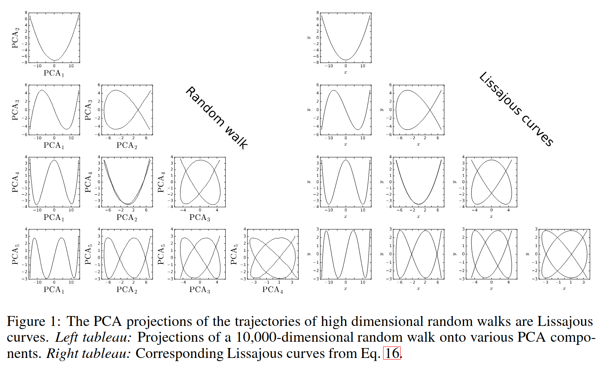

Hello! This is a test blog post.
While you're here, let me ask you, have you ever been suspicious of PCA in high dimensions? Check out the neat results of PCA of high dimensional random walks with comparison to neural network training by J. Antognini and J. Sohl-Dickstein (2018).
The authors show that the \(k\)-th principal component of a random walk corresponds to (asymptotically, in dimension) the \(k\)-th Fourier mode.
Thanks for stopping by!